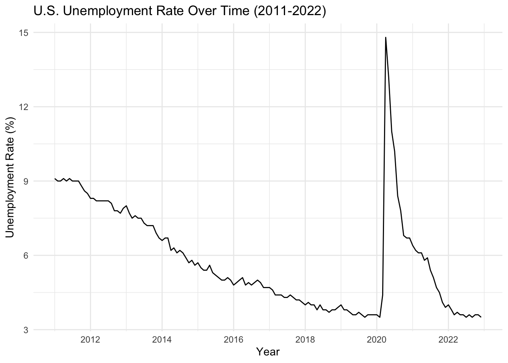
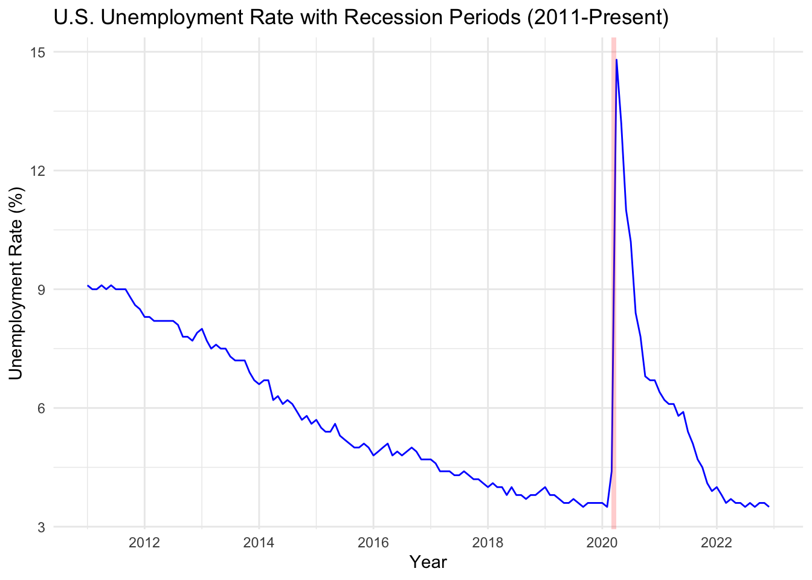
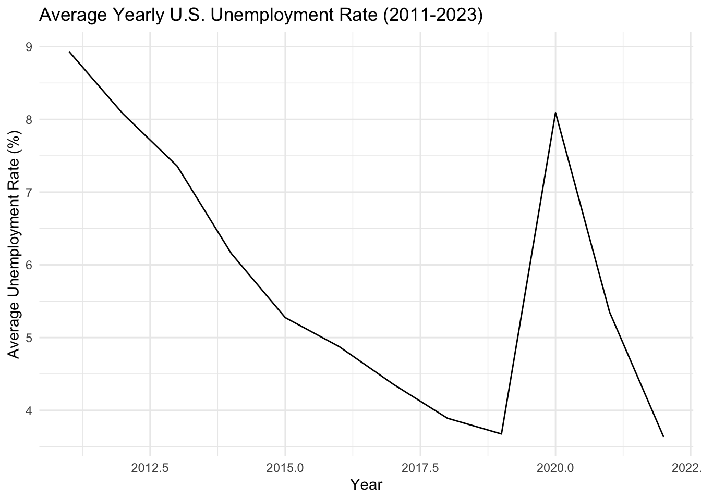
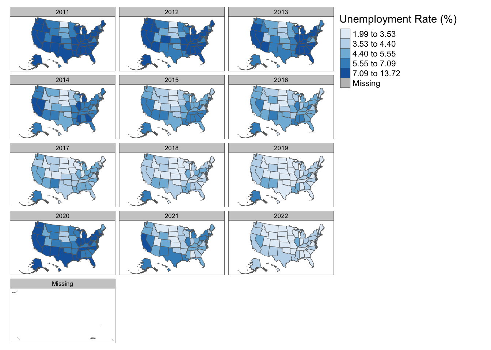

Code
options(repos = c(CRAN = "https://cloud.r-project.org"))
The downloaded binary packages are in
/var/folders/c2/6mfj09xd2qn5dnwqvj_0mjg80000gn/T//Rtmpx0DxcE/downloaded_packagesAccessing Countrywide Unemployment Rates.
The series ID for the nationwide unemployment rate is “UNRATE”. This is the Civilian Unemployment Rate.
The unemployment rate represents the number of unemployed as a percentage of the labor force. Labor force data are restricted to people 16 years of age and older, who currently reside in 1 of the 50 states or the District of Columbia, who do not reside in institutions (e.g., penal and mental facilities, homes for the aged), and who are not on active duty in the Armed Forces.
# Retrieve monthly U.S. unemployment rate data
unemployment_data <- fredr_series_observations(series_id = "UNRATE")
# Filter the data for the desired range
unemployment_data_filtered <- unemployment_data |>
filter(date >= as.Date("2011-01-01") & date < as.Date("2023-01-01"))
unemployment_yearly <- unemployment_data_filtered |>
mutate(year = lubridate::year(date)) |>
group_by(year) |>
summarize(average_unemployment = mean(value))U.S. Bureau of Labor Statistics, Unemployment Rate [UNRATE], retrieved from FRED, Federal Reserve Bank of St. Louis; https://fred.stlouisfed.org/series/UNRATE, December 8, 2024.

# Retrieve U.S. recession indicator data
recession_data <- fredr_series_observations(series_id = "USREC")
# Merge with unemployment data
unemployment_recession <- merge(unemployment_data_filtered, recession_data, by = "date", suffixes = c("_unemp", "_rec"))
ggplot(unemployment_recession, aes(x = date, y = value_unemp)) +
geom_line(color = "blue") +
geom_rect(data = unemployment_recession |> filter(value_rec == 1),
aes(xmin = date, xmax = lead(date), ymin = -Inf, ymax = Inf),
fill = "red", alpha = 0.2) +
labs(title = "U.S. Unemployment Rate with Recession Periods (2011-Present)",
x = "Year",
y = "Unemployment Rate (%)") +
theme_minimal()
avg_unemployment_plot <- ggplot(unemployment_yearly, aes(x = year, y = average_unemployment)) +
geom_line() +
labs(title = "Average Yearly U.S. Unemployment Rate (2011-2023)",
x = "Year",
y = "Average Unemployment Rate (%)") +
theme_minimal()
#ggsave("average_yearly_US_unemployment_rate.png", plot=avg_unemployment_plot, width =6, height=4)
avg_unemployment_plot
library(sf)
if(!file.exists("states.zip")){
download.file("https://www2.census.gov/geo/tiger/GENZ2018/shp/cb_2018_us_state_500k.zip",
destfile="states.zip",
method="curl")
}
##-
td <- tempdir();
zip_contents <- unzip("states.zip",
exdir = td)
fname_shp <- zip_contents[grepl("shp$", zip_contents)]
zip_sf <- read_sf(fname_shp)Search for series containing “unemployment rate”
# A tibble: 6 × 16
id realtime_start realtime_end title observation_start observation_end
<chr> <chr> <chr> <chr> <chr> <chr>
1 UNRATE 2024-12-10 2024-12-10 Unem… 1948-01-01 2024-11-01
2 UNRATENSA 2024-12-10 2024-12-10 Unem… 1948-01-01 2024-11-01
3 LNS140000… 2024-12-10 2024-12-10 Unem… 1972-01-01 2024-11-01
4 LNU040000… 2024-12-10 2024-12-10 Unem… 1972-01-01 2024-11-01
5 NROU 2024-12-10 2024-12-10 Nonc… 1949-01-01 2034-10-01
6 CAUR 2024-12-10 2024-12-10 Unem… 1976-01-01 2024-10-01
# ℹ 10 more variables: frequency <chr>, frequency_short <chr>, units <chr>,
# units_short <chr>, seasonal_adjustment <chr>,
# seasonal_adjustment_short <chr>, last_updated <chr>, popularity <int>,
# group_popularity <int>, notes <chr>Filter for state-level unemployment rates
# A tibble: 24 × 16
id realtime_start realtime_end title observation_start observation_end
<chr> <chr> <chr> <chr> <chr> <chr>
1 M0892AUS… 2024-12-10 2024-12-10 Unem… 1929-04-01 1942-06-01
2 Q0892BUS… 2024-12-10 2024-12-10 Unem… 1940-04-01 1946-10-01
3 M0892BUS… 2024-12-10 2024-12-10 Unem… 1940-01-01 1946-12-01
4 M0892CUS… 2024-12-10 2024-12-10 Unem… 1947-01-01 1966-12-01
5 LRUN64TT… 2024-12-10 2024-12-10 Infr… 1970-01-01 2024-07-01
6 LRUN64TT… 2024-12-10 2024-12-10 Infr… 1970-01-01 2024-10-01
7 LRUN64TT… 2024-12-10 2024-12-10 Infr… 1955-01-01 2023-01-01
8 LRUN64TT… 2024-12-10 2024-12-10 Infr… 1955-01-01 2023-01-01
9 LRUN64TT… 2024-12-10 2024-12-10 Infr… 1955-01-01 2024-07-01
10 LRUN64TT… 2024-12-10 2024-12-10 Infr… 1955-01-01 2024-10-01
# ℹ 14 more rows
# ℹ 10 more variables: frequency <chr>, frequency_short <chr>, units <chr>,
# units_short <chr>, seasonal_adjustment <chr>,
# seasonal_adjustment_short <chr>, last_updated <chr>, popularity <int>,
# group_popularity <int>, notes <chr>From looking through this list, realized we need all the ids that start with the state abbreviation followed by “UR” - each of these series id’s gives us the unemployment for each state over time. THe next step does additional filtering.
# List of state abbreviations
state_abbreviations <- c(
"AL", "AK", "AZ", "AR", "CA", "CO", "CT", "DE", "FL", "GA",
"HI", "ID", "IL", "IN", "IA", "KS", "KY", "LA", "ME", "MD",
"MA", "MI", "MN", "MS", "MO", "MT", "NE", "NV", "NH", "NJ",
"NM", "NY", "NC", "ND", "OH", "OK", "OR", "PA", "RI", "SC",
"SD", "TN", "TX", "UT", "VT", "VA", "WA", "WV", "WI", "WY"
)
# Filter for state unemployment series, need UR for seasonally adjusted
state_unemployment_series <- unemployment_search |>
filter(id %in% paste0(state_abbreviations, "UR"))
# View the filtered series
state_unemployment_series# A tibble: 50 × 16
id realtime_start realtime_end title observation_start observation_end
<chr> <chr> <chr> <chr> <chr> <chr>
1 CAUR 2024-12-10 2024-12-10 Unemploy… 1976-01-01 2024-10-01
2 TXUR 2024-12-10 2024-12-10 Unemploy… 1976-01-01 2024-10-01
3 NYUR 2024-12-10 2024-12-10 Unemploy… 1976-01-01 2024-10-01
4 FLUR 2024-12-10 2024-12-10 Unemploy… 1976-01-01 2024-10-01
5 PAUR 2024-12-10 2024-12-10 Unemploy… 1976-01-01 2024-10-01
6 OHUR 2024-12-10 2024-12-10 Unemploy… 1976-01-01 2024-10-01
7 MIUR 2024-12-10 2024-12-10 Unemploy… 1976-01-01 2024-10-01
8 ALUR 2024-12-10 2024-12-10 Unemploy… 1976-01-01 2024-10-01
9 MAUR 2024-12-10 2024-12-10 Unemploy… 1976-01-01 2024-10-01
10 NCUR 2024-12-10 2024-12-10 Unemploy… 1976-01-01 2024-10-01
# ℹ 40 more rows
# ℹ 10 more variables: frequency <chr>, frequency_short <chr>, units <chr>,
# units_short <chr>, seasonal_adjustment <chr>,
# seasonal_adjustment_short <chr>, last_updated <chr>, popularity <int>,
# group_popularity <int>, notes <chr>Using the filtered list of series IDs (as shown above) to fetch unemployment data for each state.
# Fetch unemployment data for all states
state_unemployment_data <- lapply(state_unemployment_series$id, function(series_id) {
fredr(
series_id = series_id,
observation_start = as.Date("2011-01-01"),
observation_end = as.Date("2022-12-31")
)
})
# Add state abbreviation to each dataframe
state_unemployment_data <- mapply(
function(data, id) {
data$state <- substr(id, 1, 2) # Extract state abbreviation
data
},
state_unemployment_data,
state_unemployment_series$id,
SIMPLIFY = FALSE
)
# Combine into a single dataframe
state_unemployment_df <- do.call(rbind, state_unemployment_data)
# View the combined dataframe
head(state_unemployment_df)# A tibble: 6 × 6
date series_id value realtime_start realtime_end state
<date> <chr> <dbl> <date> <date> <chr>
1 2011-01-01 CAUR 12.3 2024-12-09 2024-12-09 CA
2 2011-02-01 CAUR 12.2 2024-12-09 2024-12-09 CA
3 2011-03-01 CAUR 12.1 2024-12-09 2024-12-09 CA
4 2011-04-01 CAUR 12 2024-12-09 2024-12-09 CA
5 2011-05-01 CAUR 12 2024-12-09 2024-12-09 CA
6 2011-06-01 CAUR 12 2024-12-09 2024-12-09 CA Cleaning up the data to keep only the relevant columns and compute yearly averages for each state from 2011 to 2022 -
library(dplyr)
# Clean and select relevant columns
state_unemployment_clean <- state_unemployment_df |>
select(state, date, value) |>
rename(
unemployment_rate = value # Rename value to unemployment_rate
) |>
mutate(
year = format(as.Date(date), "%Y") # Extract year from the date
)
# Compute yearly averages for each state
state_unemployment_yearly <- state_unemployment_clean |>
filter(year >= 2011 & year <= 2022) |>
group_by(state, year) |>
summarize(
avg_unemployment = mean(unemployment_rate, na.rm = TRUE),
.groups = "drop"
)
# View the cleaned data
head(state_unemployment_yearly)# A tibble: 6 × 3
state year avg_unemployment
<chr> <chr> <dbl>
1 AK 2011 7.73
2 AK 2012 7.25
3 AK 2013 6.99
4 AK 2014 6.74
5 AK 2015 6.28
6 AK 2016 6.6 Performing a check on the data we create a table showing the number of yearly records for each state. We can group the data by state and count the distinct years.
library(dplyr)
library(gt)
# Count the number of years for each state
state_yearly_counts <- state_unemployment_yearly |>
group_by(state) |>
summarize(
year_count = n(), # Count the number of records (years)
.groups = "drop"
)
# Create gt table
state_yearly_counts |>
gt() |>
tab_header(
title = "Yearly Records Count by State",
subtitle = "Number of years with unemployment data (2011-2022)"
)| Yearly Records Count by State | |
|---|---|
| Number of years with unemployment data (2011-2022) | |
| state | year_count |
| AK | 12 |
| AL | 12 |
| AR | 12 |
| AZ | 12 |
| CA | 12 |
| CO | 12 |
| CT | 12 |
| DE | 12 |
| FL | 12 |
| GA | 12 |
| HI | 12 |
| IA | 12 |
| ID | 12 |
| IL | 12 |
| IN | 12 |
| KS | 12 |
| KY | 12 |
| LA | 12 |
| MA | 12 |
| MD | 12 |
| ME | 12 |
| MI | 12 |
| MN | 12 |
| MO | 12 |
| MS | 12 |
| MT | 12 |
| NC | 12 |
| ND | 12 |
| NE | 12 |
| NH | 12 |
| NJ | 12 |
| NM | 12 |
| NV | 12 |
| NY | 12 |
| OH | 12 |
| OK | 12 |
| OR | 12 |
| PA | 12 |
| RI | 12 |
| SC | 12 |
| SD | 12 |
| TN | 12 |
| TX | 12 |
| UT | 12 |
| VA | 12 |
| VT | 12 |
| WA | 12 |
| WI | 12 |
| WV | 12 |
| WY | 12 |
Now we create an interactive map using the data. The steps involve the following:
library(sf)
library(dplyr)
library(tmap)
library(tigris)
#rename existing shapefile
us_states <- zip_sf
#adjusting state column to match naming convention of state yearly unemployment table
us_states <- us_states |>
mutate(state = STUSPS)
#adjusting geometry for Alaska and Hawaii
us_states <- shift_geometry(
input_sf = us_states,
geoid_column = "GEOID",
preserve_area = FALSE, #scales Alaksa and Hawaii proportionately
position = "below" #places below continental US
)
#merging unemployment data with shapefile
map_data <- us_states |>
left_join(state_unemployment_yearly, by = "state")
#creating interactive map
#tmap_mode("view") # Enable interactive mode for the map
tm <- tm_shape(map_data) +
tm_polygons(
col = "avg_unemployment", # Column to use for shading
title = "Unemployment Rate (%)",
palette = "Blues", # Color palette for the map
style = "quantile", # Break the shading into quantiles
popup.vars = c("State" = "state", "Year" = "year", "Rate" = "avg_unemployment")
) +
tm_facets(by = "year") + # Animate changes over years
tm_view(set.view = c(-98, 38, 4)) # Center and zoom the map on the US
# Render the map
tm
Altering the above code to make one interactive map-
library(sf)
library(dplyr)
library(tmap)
#rename existing shapefile
us_states <- zip_sf
#adjusting state column to match naming convention of state yearly unemployment table
us_states <- us_states |>
mutate(state = STUSPS)
#merging unemployment data with shapefile
map_data <- us_states |>
left_join(state_unemployment_yearly, by = "state")
#creating interactive map
tmap_mode("plot") # This step is important - switch to static plotting mode
tm2 <- tm_shape(map_data) +
tm_polygons(
col = "avg_unemployment", # Column to use for shading
title = "Unemployment Rate (%)",
palette = "Blues", # Color palette for the map
style = "quantile", # Break the shading into quantiles
) +
tm_facets(along="year", free.coords = FALSE)
tmap_animation(tm, filename= "unemployment_animation.gif", delay=100)Creating frames
Creating animation
Animation saved to /Users/christiecannon/STA9750-2024-FALL/unemployment_animation.gif